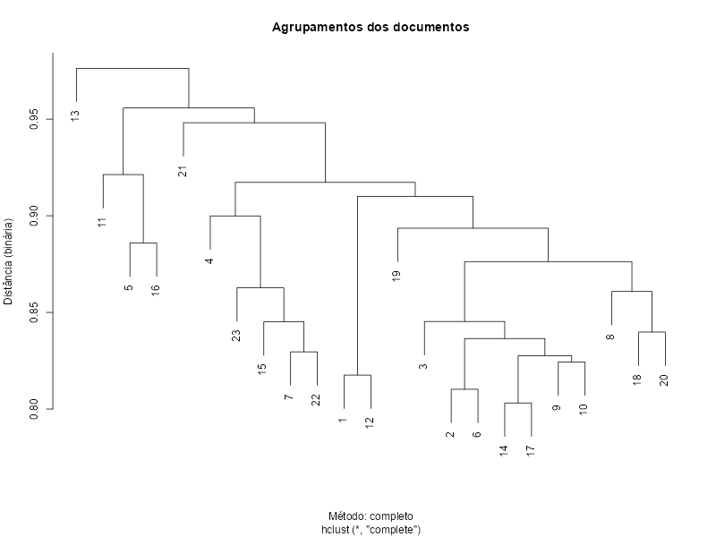
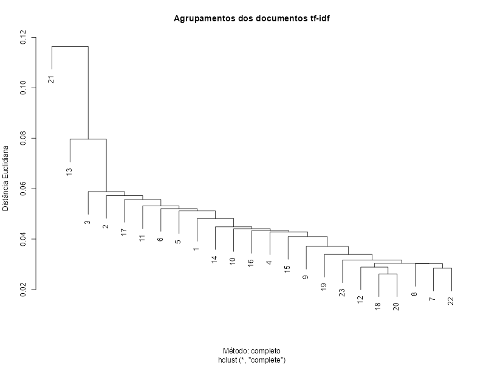
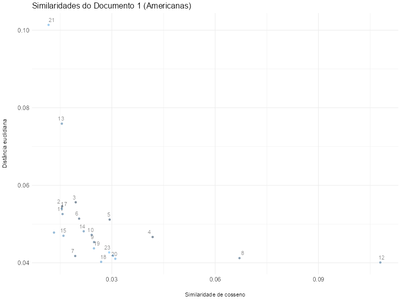

1. Medidas e representações: discretas x contínuas
As matrizes txd geradas nos passos anteriores reúnem medidas de tokens isolados, sem considerar suas posições nas frases ou relações com outros tokens.
Contudo, uma vez que cada linha (ou vetor) da matriz se refere a um documento, pode-se assumir que as colunas (tokens) seriam características dele. Em outros termos, as relações entre tokens e os documentos em que ocorrem, podem codificar aspectos do significado documento.
Pode-se codificar essas relações de diversas formas:
Frequência absoluta documento: f;
Frequência relativa no documento: a medida tf;
Inverso da frequência no documento na coleção: idf;
Produto tf-idf;
One hot: ausência (0) ou presença (1) do termo;
Outras estratégias baseadas em redes neurais.
O que todas essas codificações têm em comum é o uso de vetores multidimensionais que representam o documento por meio de seus elementos constituintes discretos (tokens). No caso da coleção de Machado de Assis, a matriz tem as seguintes características:
23 documentos (linhas);
14.362 características (colunas ou dimensões do vetor).
Ainda que sejam características geradas a partir de elementos discretos, podemos empregar toda a maquinaria matemática para computar relações entre as representações que construímos para os documentos:
Distâncias e agrupamentos: funções dist() e hclust();
Correlações: funções cor() e cor.test();
Similaridade: função cosine().
A dificuldade de se trabalhar com representações multidimensionais consiste em visualizá-las, uma vez que a nossa cognição só lida bem com até três dimensões. Para isso, a linguagem R oferece recursos para a redução da dimensionalidade, transformando, por exemplo, as 14.362 dimensões em duas (2) ou três (3), o que permite gerar gráficos bi e tridimensionais.
1.2 Do discreto para o contínuo
Uma mudança importante acontece ao deixarmos de considerar as características que representam os documentos em termos discretos: os significados de cada característica, bem como sua rotulação, deixam de fazer sentido. Ademais, por razões de economia e eficiência, abandonar o registro discreto da característica nos possibilita restringir a quantidade de dimensões da representação.
Na prática, passaremos a utilizar técnicas de aprendizado de máquina para construir representações de palavras, sentenças e documentos sem que precisemos lidar com cada unidade linguística, de baixo para cima. O processo apresenta amostras do texto a redes neurais para treiná-las nos termos de suas características, que são representadas nos pesos entre as camadas de neurônios artificiais.
Essas técnicas envolvem conhecimentos matemáticos mais avançados e difíceis de se chegar analiticamente. Felizmente, as funções da linguagem R fazem todo o trabalho e podemos nos concentrar nas análises 😁.
Contudo, antes de utilizar essas funções, exploraremos os limites das representações discretas a técnicas matemáticas mais intuitivas.
2. Variações de representações discretas
Para retomar as análises, carregaremos os resultados dos processamentos gerados na aula anterior (03), sem precisar tratar novamente os dados:
The downloaded binary packages are in
C:\Users\msn\AppData\Local\Temp\RtmpSaUIn6\downloaded_packages
Warning message:
In file.copy(savedcopy, lib, recursive = TRUE) :
problem copying C:\Users\msn\AppData\Local\R\win-library\4.5\00LOCK\openxlsx\libs\x64\openxlsx.dll to C:\Users\msn\AppData\Local\R\win-library\4.5\openxlsx\libs\x64\openxlsx.dll: Permission denied
Warning message:
package ‘openxlsx’ was built under R version 4.5.2
2.1 Codificação e representação
A base txd.tf consiste na frequência relativa dos tokens da coleção. Há uma versão mais simples desta representação, denominada one-hot, que apenas sinaliza se um termo ocorreu (valor 1) ou não (0) no documento que integra a coleção e, como resultado, produz cadeias de zeros e uns:
Isto é um exemplo
Um outro exemplo
A codificação one-hot da coleção teria como resultado a matriz a seguir:
documento
isto
é
um
exemplo
outro
representação
1
1
1
1
1
0
11110
2
0
0
1
1
1
00111
Vamos aproveitar txd.tf como base para construir outro data.frame que emprega a codificação one-hot:
Compare as duas matrizes: txd.tfidf e txd.onehot. A representação do documento nos termos da frequência relativa tf e do produto tf-idf é fundada em números reais, em vez de ausente (0) e presente (1). Veremos a seguir que, embora o uso de número reais nas características permita diferenciar melhor os vetores, há técnicas que conseguem agrupar documentos baseados em cada tipo de representação.
Há duas formas de calcular distâncias entre vetores por métricas que nos interessam: binária assimétrica e euclidiana.
2.2 Distância binária assimétrica
Também conhecida como índice de similaridade de Jaccard, esta métrica é específica para calcular o quanto dois conjuntos de dados com características binárias (0 ou 1) têm sobreposição. Para dois documentos p q q com n características que podem estar presentes ou ausentes, o cálculo da distância se inicia pela identificação de quatro casos:
M_{11}: total de atributos que tanto p quanto q apresentam (1)
M_{01}: total de atributos que p não apresenta (0) e que q apresenta (1)
M_{10}: total de atributos que p apresenta (1) e que q não apresenta (0)
M_{00}: total de atributos que bem p nem q apresentam (0)
O valor de n é igual à soma desses atributos:
n=M_{11} + M_{01} + M_{10} + M_{00}
\tag{1}
A partir disso, o índice de similaridade é calculado por:
J=\frac{M_{11}}{M_{01}+M_{10}+M_{11}}
\tag{2}
E a distância entre p e q é calculada por:
d_J=1-J
\tag{3}
O argumento method da função dist() pode receber o valor binary, referente ao cálculo da distância binária assimétrica. Utilizando a matriz txd.onehot, podemos agrupar os documentos em função da ausência ou presença de tokens considerados como características:
# -------------------------------------------# calcula distância entre documentos 1 e 2# -------------------------------------------# recupera valores binários das característicasdoc1 <-as.numeric(txd.onehot[1,])doc2 <-as.numeric(txd.onehot[2,])# define Msm11 <-0m01 <-0m10 <-0m00 <-0# calcula os Msfor (d in1:length(doc1)) {# caso m11if (doc1[d] ==1&& doc2[d] ==1) m11 <- m11 +1# caso m01if (doc1[d] ==0&& doc2[d] ==1) m01 <- m01 +1# caso m10if (doc1[d] ==1&& doc2[d] ==0) m10 <- m10 +1# caso m00if (doc1[d] ==0&& doc2[d] ==0) m00 <- m00 +1}# calcula Jj <- m11 / (m01 + m10 + m11)# calcula dJdj <-1-jprint(paste("Distância entre 1 e 2:",dj))# calcula diretamente pela função dist() para comparardj2 <-dist(txd.onehot[1:2,],method="binary")print(paste("Distância entre 1 e 2 via dist():",dj2))
[1] "Distância entre 1 e 2: 0.887337057728119"
[1] "Distância entre 1 e 2 via dist(): 0.887337057728119"
A função dist() tem a conveniência de facilitar a análise de inúmeros documentos com características binárias na mesma execução, além de poder ser combinada à instrução hclust(), que cria agrupamentos (clusters) a partir das distâncias e permite a visualização da árvore resultante:
# plotaplot(# agrupamentoshclust(# distância bináriadist(txd.onehot, method="binary"),# método: completo (encontra mais similares)method="complete" ),# título do gráficomain="Agrupamentos dos documentos",ylab="Distância (binária)",xlab="Método: completo")

A árvore está dividida em dois grandes grupos, sendo o primeiro (à esquerda), composto pelo documento 13 — “O Visconde de Castilho”. Na segunda partição, há outras subdivisões tais como aquela mais à esquerda: 11 (“Fagundes Varela”) versus 5 (“Lúcio de Mendonça: Névoas matutinas”) e 16 (“Francisco de Castro: Harmonias errantes”).
Dica: frente a esses resultados, cabe ao pesquisador estudar os documentos e verificar as razões do agrupamento. Pela natureza da codificação (presente/ausente), os documentos compartilham parte importante do vocabulário.
O trecho de código a seguir exibe as distâncias entre os documentos do ramo esquerdo da árvore, lembrando de que quanto mais próximo de zero, mais similares são os objetos a partir de suas características.
Confirmamos a partição da imagem observando que o documento 13 está mais distante de 5 e 16 que de 11, embora seja importante notar que os documentos são muito diferentes entre si. Na realidade, como se pode observar, nenhum documento dista de outros por menos de 0,80.
# menor distância da coleçãomin(dist(txd.onehot,method="binary"))
[1] 0.8031496
2.3 Distância euclidiana
A segunda métrica é mais familiar, pois é abordada no ensino médio. A variável n é o número de dimensões ou características na fórmula a seguir:
Neste caso, as variáveis p e q também correspondem a dois documentos, porém os índices \{1, 2, ..., n\} indicam as características que informam o cálculo da distância.
Em vez de utilizarmos a matriz txd.onehot, calcularemos a distância entre os documentos utilizando a métrica tf-idf computada na matriz txd.tfidf.
# plotaplot(# agrupamentoshclust(# distância euclidianadist(txd.tfidf, method="euclidean"),# método: completo (encontra mais similares)method="complete" ),# título do gráficomain="Agrupamentos dos documentos tf-idf",ylab="Distância Euclidiana",xlab="Método: completo")

A métrica tf-idf parece representar melhor os documentos e a razão é evidente: a presença ou ausência de uma característica foi substituída por valores contínuos (números reais) que informam a importância de cada token para os documentos. Assim, o cálculo de distância incorpora essas nuances e resulta em documentos com até 0,026 de similaridade.
Esta é uma métrica de similaridade entre dois vetores, baseada no cosseno do ângulo entre eles. O valor calculado está no intervalo [-1,+1]:
Valores próximos de 1 indicam proporcionalidade;
Vetores ortogonais (90°) têm similaridade em torno de 0;
Valores próximos de -1 indicam vetores opostos.
A seguir, testamos o cálculo utilizando os documentos 1 e 2 da coleção. Para isso, instalaremos o pacote lsa e utilizaremos a função cosine(), que recebe como argumentos os dois vetores a serem comparados.
# instala e carrega pacoteinstall.packages('lsa')library(lsa)# seleciona documentosdoc1 <-as.numeric(txd.tfidf[1,])doc2 <-as.numeric(txd.tfidf[2,])# calculacosine(doc1,doc2)
Installing package into ‘C:/Users/msn/AppData/Local/R/win-library/4.5’
(as ‘lib’ is unspecified)
package ‘lsa’ successfully unpacked and MD5 sums checked
The downloaded binary packages are in
C:\Users\msn\AppData\Local\Temp\RtmpSaUIn6\downloaded_packages
Loading required package: SnowballC
Warning message:
package ‘lsa’ was built under R version 4.5.2
[,1]
[1,] 0.01461516
O valor resultante (0,014) indica similaridade baixa, com os vetores se aproximando da ortogonalidade (0).
O script abaixo demonstra a construção de um data.frame que calcula a distância euclidiana e a similaridade de cosseno entre o documento 1 (“Falenas”) e todos os demais da coleção. Este tipo de resultado permite visualizar as métricas lado a lado.
A matriz resultante compara as duas métricas e contribui para a avaliação da similaridades apoiada por dois índices. O gráfico a seguir exibe as duas métricas da coleção quanto ao documento 1 e sugere que os documentos 12 (“Americanas”) e 8 (“Badaladas”) seriam os mais similares a ele.
# instala pacotesinstall.packages('ggplot2')# carrega pacoteslibrary(ggplot2)# plotaggplot(similaridade) +geom_jitter(aes(x=simi.cos, y=dist.euc, colour=doc2), alpha=0.5, width=0.001) +geom_text(aes(x=simi.cos, y=dist.euc, label=doc2, vjust=-0.75), alpha=0.5, check_overlap =TRUE)+labs(title="Similaridades do Documento 1 (Americanas)")+xlab("Similaridade de cosseno")+ylab("Distância euclidiana")+theme_minimal() +theme(# título do gráficoplot.title =element_text(size=16),# fonte e espaçamento do eixo xaxis.text.x =element_text(size=12),axis.title.x =element_text(margin=margin(t=20,b=0,l=0,r=0,unit="pt")),# fonte e espaçamento do eixo xaxis.text.y =element_text(size=12),axis.title.y =element_text(margin=margin(t=0,b=0,l=0,r=20,unit="pt")),# oculta legendalegend.position="none" )
Installing package into ‘C:/Users/msn/AppData/Local/R/win-library/4.5’
(as ‘lib’ is unspecified)
package ‘ggplot2’ successfully unpacked and MD5 sums checked
The downloaded binary packages are in
C:\Users\msn\AppData\Local\Temp\RtmpSaUIn6\downloaded_packages
Warning message:
package ‘ggplot2’ was built under R version 4.5.2

Apesar de a distância entre 1 e 12 ser pequena (0,04), a similaridade é baixa (0,10). Tal diferença nos ajuda reforçar que não é possível compreender as razões da similaridade sem a avaliação qualitativa dos documentos.
Atividade
Selecione qualquer subconjunto de obras da coleção completa de Machado de Assis (arquivo machado.xlsx) ou outra de sua preferência.
Calcule a métrica tf-idf, as distâncias euclidianas e similaridades de cosseno entre os documentos da coleção;
Gere o agrupamento dos documentos pela métrica tf-idf;
Gere e exporte uma planilha com as distâncias e similaridades;
Visualize a relação entre distâncias e similaridades.
Dica: o notebook aula-04-exemplo.ipynb exemplifica todas as operações necessárias para dez obras selecionadas aleatoriamente da coleção.